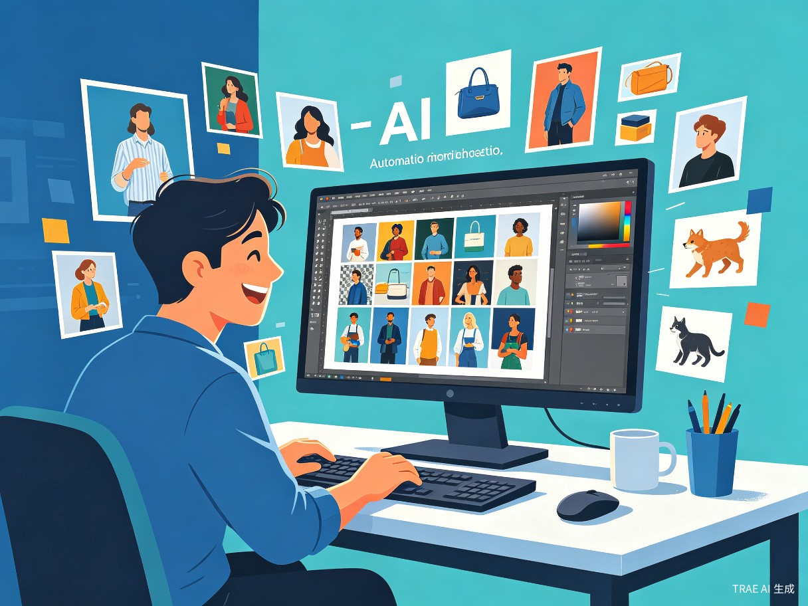
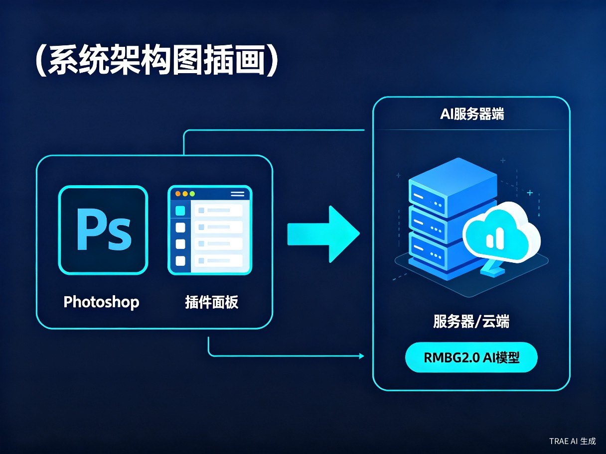
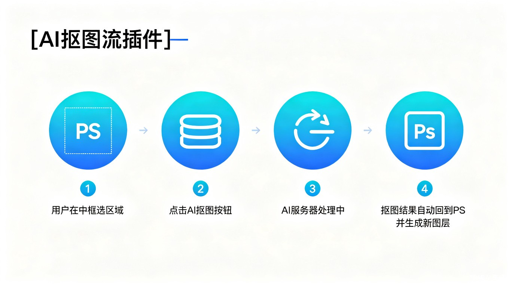
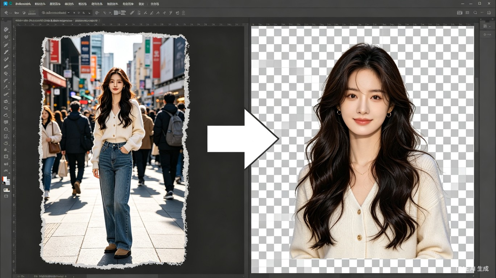

让PS拥有AI级抠图能力
将前沿AI抠图模型与Photoshop深度融合，为设计师带来前所未有的高效抠图体验
创意灵感来源
Photoshop自带的抠图工具（如魔棒、快速选择、钢笔工具等）在面对复杂边缘时效果往往不尽人意。特别是处理头发丝、半透明物体、复杂背景时，需要耗费大量时间进行手动精修。
我曾使用过ComfyUI的AI抠图工作流，其基于深度学习模型的抠图效果令人惊艳——边缘自然、细节完整、操作简便。这启发了我：为何不将这种AI能力直接集成到设计师最常用的PS中？
于是，AI智能抠图PS插件应运而生。它由PS插件端和AI服务器端两部分构成，AI模型采用业界领先的RMBG2.0，让设计师无需离开PS即可获得顶级AI抠图体验。

双端协同架构设计
插件端轻量嵌入，服务端承载AI算力，实现高效分离与协同

PS插件端
以CEP/UXP扩展形式嵌入Photoshop，提供框选工具、参数面板、一键抠图按钮。与PS原生工作流无缝融合，抠图结果直接生成新图层。
AI服务器端
基于Python + FastAPI搭建本地/远程服务，加载RMBG2.0模型进行推理。支持GPU加速，单次抠图耗时仅需数百毫秒。
通信协议
插件端通过HTTP/WebSocket与服务器通信，传输图片数据与抠图指令。支持本地部署和局域网远程调用，灵活适配不同工作场景。
四步完成AI智能抠图
极简操作，让抠图从繁琐的手动工作变成一键自动化

框选目标区域
在PS中使用插件提供的框选工具，大致框选需要抠出的主体区域。无需精确描边，AI会自动识别主体边界。
点击AI抠图
点击插件面板上的"AI抠图"按钮，插件将当前图层数据发送至AI服务器进行处理。
AI智能处理
RMBG2.0模型分析图像，精准分离前景与背景。处理过程通常在1秒内完成。
结果自动回传
抠图结果（带透明通道的PNG）自动返回PS，生成独立新图层，可直接进行后续编辑。
为谁解决什么问题
面向所有使用Photoshop的设计师，解决抠图效率低、效果差的行业痛点

手动抠图效率低下
使用钢笔工具或魔棒工具抠一张复杂图片可能需要数十分钟，大量重复劳动消耗创作热情。
边缘处理效果差
头发丝、毛绒、半透明材质等细节难以处理干净，边缘锯齿、白边问题频发。
批量处理苦不堪言
电商设计、广告物料等场景需要批量抠图时，传统方式工作量巨大且容易出错。
AI生图难以分层
使用Midjourney、Stable Diffusion等AI生成的图片不分层，想单独提取某个元素极其困难。
目标用户：平面设计师、电商美工、广告创意人员、摄影后期师、UI设计师等所有使用Photoshop进行图像处理的专业人士。
为设计工作流带来的变革
不仅仅是抠图工具，更是连接AI生成与传统设计的桥梁
核心价值
效率飞跃：将原本需要数十分钟的抠图工作压缩至数秒，设计师可以将更多时间投入到创意本身。
质量保障：RMBG2.0模型在发丝、半透明、复杂边缘等场景下表现卓越，效果远超手动抠图。
无缝集成：不打破原有PS工作流，无需切换软件，在熟悉的环境中享受AI能力。
- 一键抠出主体，自动生成透明图层
- 支持批量处理多张图片
- 可框选特定元素进行局部抠图
- AI生成图片快速分层提取
典型应用场景
电商设计
快速抠出商品主体，制作白底图、场景合成图
摄影后期
人像精修时快速分离人物与背景，进行独立调色
AI生图分层
将AI生成的合成图分解为独立元素，便于二次创作
广告创意
快速提取素材元素，进行多图层合成与排版
为什么选择RMBG2.0
业界领先的背景移除模型，为抠图质量提供坚实保障
深度学习驱动
RMBG2.0基于先进的Encoder-Decoder架构，通过大量高质量数据训练，能够理解图像语义，精准区分前景与背景。
极速推理
模型经过优化，在消费级GPU上即可实现实时推理，单次抠图耗时通常在300-800毫秒之间。
细节保留
对头发丝、羽毛、玻璃、烟雾等复杂材质有出色的处理能力，边缘过渡自然，无锯齿无白边。
本地部署
支持完全本地部署，数据无需上传云端，保护用户隐私与商业素材安全。
轻量集成
插件端体积小巧，不拖累PS启动速度；服务端可独立运行，也可打包为桌面应用一键启动。
持续迭代
架构设计支持模型热更新，未来可无缝升级至更先进的抠图模型，保护用户投资。
让抠图不再是负担
AI智能抠图PS插件，将前沿AI能力与专业设计工具深度融合，
为每一位设计师节省时间、提升品质、释放创意